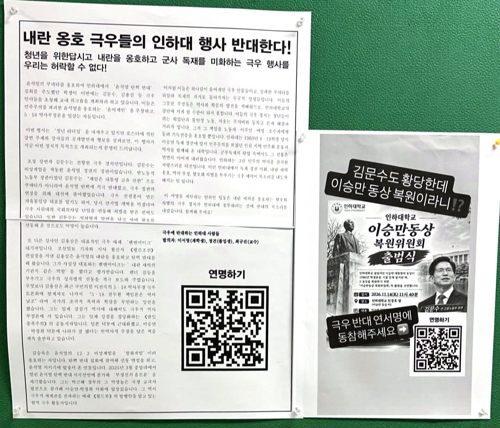

인하대 총학생회동문회, 이승만 동상 복원 반대 성명·동문 연서명
1954년 기록으로 반박한 「설립자 이승만」 주장
1984년 동상 철거 사진, 복원 서명 누리집에
오는 14일 후문 출범식 앞두고 복원 서명 2967건
AI경제저널=김갑봉 기자 | 인하대학교총학생회동문회(집행위원장 김효진)가 12일 성명을 내고 교내 이승만 동상 복원에 반대했다. 동문회는 이 성명에 함께할 동문의 연서명을 받고 있다.
성명 제목은 「인하대의 창학 정신은 하와이동포와 인천시민이다!」이다. 연서명 대상은 총학생회와 단과대학·학과 학생회, 동아리에서 활동한 동문이다.

「설립자 이승만」 반대 등 요구 넷
동문회는 요구 넷을 내걸었다. 첫째로 「인하대 설립자 이승만」 주장을 역사 왜곡으로 규정했다. 인하대를 세운 이는 하와이 동포와 인천시민, 국민이라고 밝혔다.
둘째는 동상 복원을 앞세운 정치 행사를 멈추라는 요구다. 셋째로 학교 당국에 교내 동상과 조형물 복원을 어떤 형태로도 허용하지 말라고 했다. 넷째는 창학 정신을 가르칠 교육과정 마련이다.
동문회는 성명을 "인하대는 특정한 어떤 개인이 세운 대학이 아니다"라는 문장으로 맺었다.
사탕수수밭 품삯과 인천시 땅 12만5173평
성명은 1902년 12월 22일 제물포항을 떠난 첫 공식 하와이 이민 121명에서 시작한다. 동포들은 사탕수수밭 품삯을 모아 대한인국민회에 의무금으로 냈다. 성명은 이 돈이 임시정부와 독립군을 떠받쳤다고 적었다.
교명 '인하'는 인천의 '인'과 하와이의 '하'를 땄다.
이영호 인하대 사학과 교수는 2001년 『기록학연구』에 실은 논문에서 설립 재원을 짚었다. 인천시장은 시유지 12만5173평을 내놓았다. 공무원 봉급에서 5%씩 거둔 돈이 103만여환, 기업체 등이 낸 돈이 2734만여환이었다.
발의와 설립을 가른 1954년 기록
동문회는 이승만이 1952년 공과대학 설립을 발의했을 뿐이라고 했다. 인하대 공식 연혁도 이승만 대통령이 설립을 '발의'했다고 적었다. 인하공과대학은 1954년 4월 24일 문을 열었다.
김법린 문교부 장관은 1954년 2월 8일 담화에서 "하와이 동포들의 눈물겨운 기부금 15만불"을 재단의 출발점으로 꼽았다. 이승만도 그해 10월 7일 개교기념식 치사에서 그 돈을 "그 가난한 농장에서 번 돈"이라고 했다.
이 교수 논문을 보면 하와이 한인기독학원은 1947년 문을 닫았다. 오중정 전 영사는 학원 이사회가 찬반 논란 끝에 부지를 판 돈을 인하대 설립자금으로 넘겼다고 증언했다.
탄핵 결의안 첫 증거, 하와이 인구세
동문회는 이승만이 1925년 임시의정원에서 탄핵된 사실도 들었다. 탄핵안은 그해 3월 18일 임시의정원을 통과했다. 국사편찬위원회 우리역사넷에 실린 탄핵 결의안은 증거 첫머리에 이승만의 공첩을 적었다.
공첩에서 이승만은 하와이 교민 인구세 중지가 자신의 지휘였다고 밝혔다. 하와이 민단장과 부인회에 "상해로 보낼 공금을 다 정지"하라고 타일렀다고도 적었다. 심판서 주문은 "임시대통령 이승만을 면직함"이다.
동문회는 "동포들의 독립 자금을 가로막은 사람을 그들의 돈으로 세운 대학의 설립자라 칭할 수는 없는 것"이라고 밝혔다.
철거 사진 쓴 복원 서명, 오는 14일 후문
1984년 11월 2일 밤 학생 400여명이 1979년 세운 이승만 동상을 끌어내렸다. 동문회는 그날 사진이 복원 서명운동 홍보물에 쓰인다고 했다. 복원 서명 누리집에는 건립 모습과 철거 당시 모습을 나란히 붙인 사진이 실려 있다.
동문회는 그날 교정에 섰던 학생들이 지금 동문회 선배들이며, 옥고를 치르기도 했다고 밝혔다.
재학생 넷이 지난 10일 낸 복원 취지문은 인하대 뿌리를 하와이 독립운동과 건국으로 본다. 취지문은 그 일을 "추진하고 비전을 제시했던 인물은 누가 뭐라 해도 이승만"이라고 적었다. 누리집 서명은 12일 18시42분 2967건이고, 중복 검증 전 건수다.
인하대는 교내 출범식과 김문수 전 고용노동부 장관 초청 워크숍을 모두 불허했다. 인하대이승만동상복원위원회는 오는 14일(토) 오전 11시30분 인하대 후문에서 출범식을 연다.
참고문헌
- 이영호(2001). 「하와이 이민과 '인하공과대학'의 설립」. 『기록학연구』 3, 139~177. 한국국가기록연구원. https://doi.org/10.20923/kjas.2001.3.139
- 국사편찬위원회 우리역사넷. 「임시정부의 이승만 대통령 탄핵」(「대한민국임시정부공보」 제42호 탄핵 결의안·심판서). https://contents.history.go.kr/id/hm_123_0130
- 인하대학교(2022). 「인하대학교의 발자취」. https://www.inha.ac.kr/sites/kr/files/2022/01%20%EC%9D%B8%ED%95%98%EB%8C%80%ED%95%99%EA%B5%90%EC%9D%98%20%EB%B0%9C%EC%9E%90%EC%B7%A8.pdf
- 인하대학교총학생회동문회(2026.11.12). 「[성명서] 인하대의 창학 정신은 하와이동포와 인천시민이다!」 연서명 안내. https://forms.gle/dcR1rjd1mpmXx6Sa8
- 인하대이승만동상복원위원회. 「인하대 설립자 이승만 동상을 복원하자!」 서명 누리집·취지문(2026.11.10)·출범식 포스터. https://signforkorea.com/inha/
[사진 출처]
- [사진1] 인하대학교 제공
관련기사
- 인하대, 이승만 동상 복원위 출범식·김문수 워크숍 모두 '불허'
- 12·3내란 옹호 김문수 인하대 특강 '발칵'…"극우 행사 반대"
- [경세사초] 이승만이 인하대를 설립했다는 극우세력의 역사왜곡
- 인하대 해양전문대학원, 지금 만들면 된다
저작권자 © AI경제저널 무단전재 및 재배포, AI학습 및 활용 금지